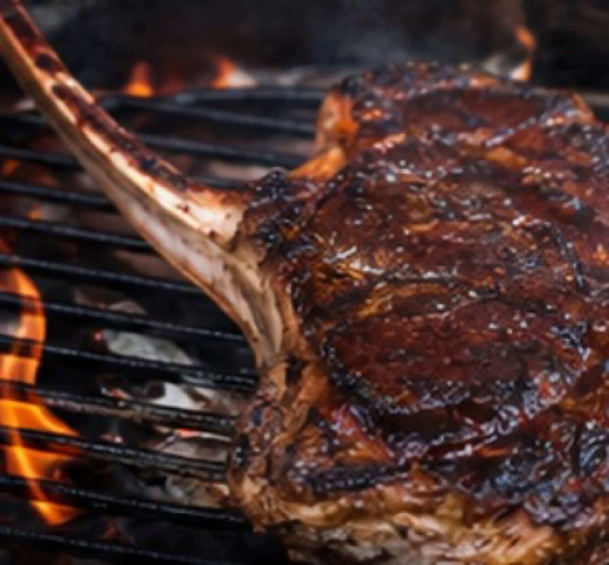

YORON BBQ
JAPANESE NEW BARBECUE
本場アメリカンBBQを、与論島から。
「飲みに行こう」の、
となりに。
WHO WE ARE
与論島では「飲みに行こう」が、そのまま「バーベキューしよう」になる。
その当たり前を、日本中の合言葉に変えていくコミュニティです。
わたしたちの言うバーベキューは、あなたの知っている『バーベキュー』とは別の食べ物です。 特別な塊肉ではなく、いつものスーパーの食材で成立します。作って、食べて、片づけて、全部で3〜4時間。 レシピも温度の科学も、次回の開催情報も、すべてサイトで公開しています。
3–4h
作って食べて片づけて、
全部込みの時間
全部込みの時間
24品
サイトで公開中の
レシピの数
レシピの数
5つ
YORON BBQ の
原則
原則
YORON BBQ、5つの原則。
- 13〜4時間で完結する。
- 2熱々を、出来立てで。
- 3多品種——肉だけじゃない。
- 4創作を、解放する。
- 5人間関係の、最強のハブに。

スマホで、火の話を。
レシピ・温度の科学・
次回の開催まで、ぜんぶここに。
次回の開催まで、ぜんぶここに。
yoron-bbq.com
与論島の当たり前を、
日本の合言葉に。
日本の合言葉に。